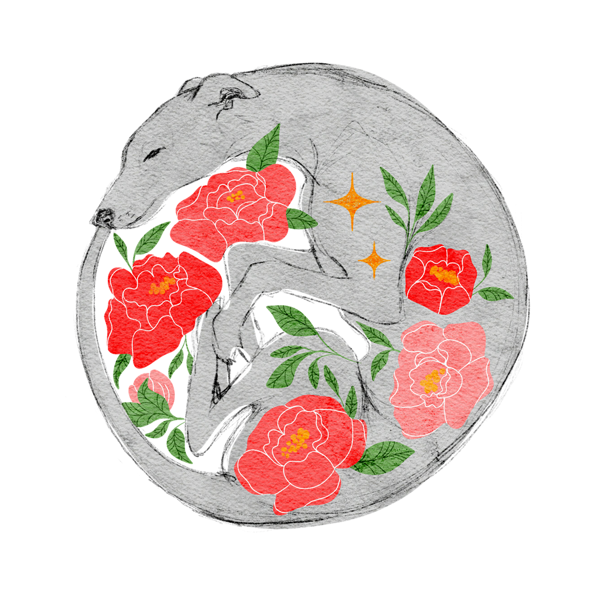

Available · Milan or remote · employment or freelance (Partita IVA)
Natalia
Borzyk
Graphic Designer — print, packaging, surface patterns, branding & e-commerce.
9+ years of experience across print houses, textile companies and e-commerce, for clients in Europe, North America, Australia and the UAE. I know the production chain from concept to approved sample, and I start with market research, so what I design is made to sell.
[Your decal or illustration as a cut-out PNG]
